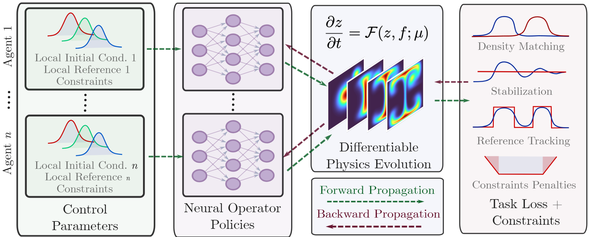
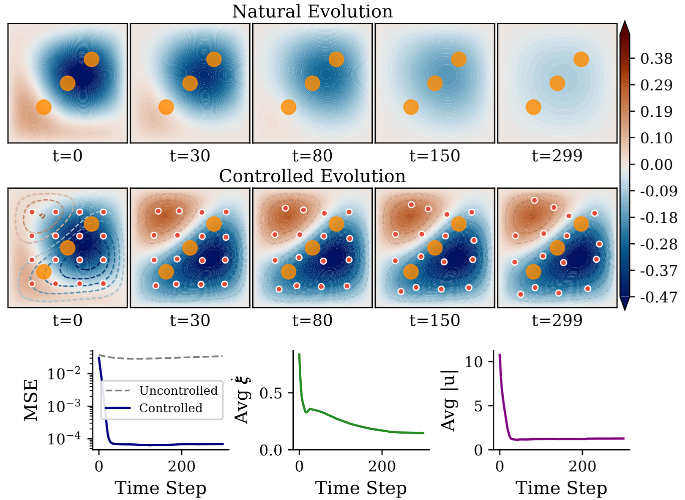
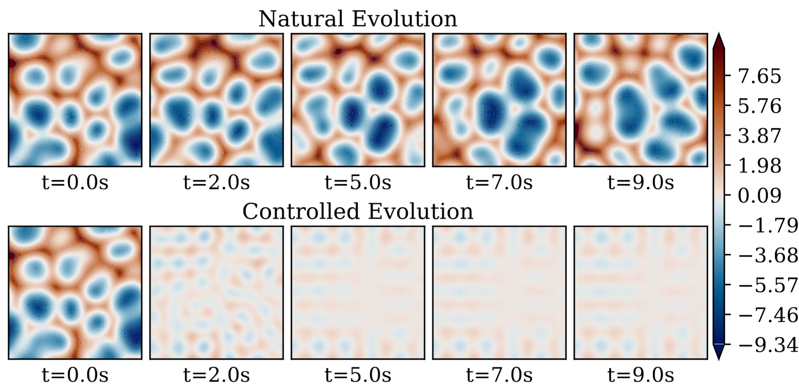
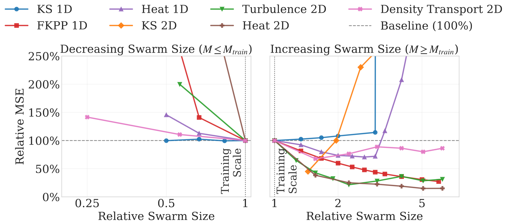

Abstract
Controlling partial differential equations (PDEs) with learning-based policies remains fundamentally limited by fixed-dimensional representations: policies trained for a specific sensor, actuator, or agent configuration typically fail when the configuration changes. This limitation is particularly severe in multi-agent PDE control, where policies do not scale across population sizes without retraining.
We address this challenge by introducing Cardinality Invariant Neural Operator Control (CINOC), reformulating PDE control as an operator learning problem that maps state fields to continuous control functions and trains them end-to-end through differentiable PDE solvers, yielding policies that naturally adapt to varying sensor and actuator configurations.
Remarkably, CINOC policies trained on small swarms exhibit cardinality invariance, allowing for zero-shot transfer to significantly larger populations as well as robustness to partial agent failure. Empirically, we validate CINOC on tracking, stabilization, and density transport across linear, nonlinear, chaotic, and turbulent PDEs.
Problem Formulation
We consider the optimal control of a time-dependent state field \( z(x,t) \in \mathcal{Z} \) over a bounded spatial domain \( \Omega \subset \mathbb{R}^d \) and a finite time horizon \( t \in [0,T] \).
The system is actuated by \( M \) agents. The \( i \)-th agent is located at \( \xi_i(t) \in \Omega \) and applies a localized control intensity \( u_i(t) \in \mathbb{R} \). For mobile agents, the position evolves according to a controlled velocity \( v_i(t) \in \mathbb{R}^d \).
The general multi-agent PDE control problem is defined as finding the optimal control variables to minimize the expected cost:
$$ \min J = \mathbb{E}_{\psi} \left[ \int_0^T l(z(x,t), u^M(t), v^M(t), \psi) dt \right] $$
Subject to the governing PDE dynamics and kinematic constraints:
$$ \frac{\partial z}{\partial t} = \mathcal{F}(z(x,t); \psi) + \sum_{i=1}^M \mathcal{B}(x, u_i(t), \xi_i(t)) $$
$$ \dot{\xi}_i(t) = v_i(t), \quad i = 1, \dots, M $$
Here, the nonlinear differential operator \( \mathcal{F} \) governs the intrinsic PDE dynamics. The actuation map \( \mathcal{B} \) projects the scalar control input \( u_i(t) \) into the spatial domain around the agent's current location \( \xi_i(t) \). Because CINOC parameterizes the shared policy as a Neural Operator, it can map local observations directly to continuous control functions, establishing the cardinality invariance necessary for zero-shot scalability.
Methodology
We recast control synthesis as a shared operator learning problem in which all agents query a single, shared neural operator policy. The framework consists of four coupled differentiable components arranged in a closed loop: (i) an observation operator, (ii) a neural operator policy mapping local observations to actions, (iii) a differentiable PDE solver, and (iv) a learning objective backpropagating gradients through the physics.

Results & Cardinality Invariance
We evaluate the multi-agent operator learning framework across three diverse PDE control modalities: Trajectory Tracking (managing dissipation in linear/nonlinear systems), Stabilization (suppressing spatiotemporal chaos), and Density Transport (constructive pattern formation via flow manipulation). We report below the results for Trajectory Tracking with Actuator Constraints in a 2D Heat equation and Stabilization of the chaotic 2d Kuramoto-Sivashinsky equation.

Trajectory Tracking with Constraints: Controlled evolution of a 2D Heat field where mobile agents regulate the 2D temperature field toward reference contours while successfully navigating and avoiding static exclusion zones (orange circles).

Stabilizing Spatiotemporal Chaos: The policy successfully manages nonlinear amplification, driving the chaotic 2D Kuramoto-Sivashinsky system to a zero equilibrium state.
Zero-Shot Cardinality Invariance

Robust Scaling Across Populations: A central claim of CINOC is the ability to train a single shared policy on a fixed number of agents (\(M_{train}\)) and deploy it zero-shot on vastly different swarm sizes.
The Mechanism of Self-Normalization: How can a policy control a swarm several times larger than it has ever seen without blowing up the physics? Ablation studies identify an emergent property termed Self-Normalization. Driven by the effort regularization term during training, agents implicitly learn to coordinate stigmergically through the global PDE field. They automatically scale their individual control outputs inversely with the population size (\( \sim 1/M \)), ensuring the total aggregate forcing remains bounded.
We ground this empirical Cardinality Invariance phenomenon mathematically via a Mean-Field limit theorem (detailed in the paper), proving that discrete multi-agent policy gradients converge consistently to the underlying continuous operator limit as the population scales.
BibTeX
@inproceedings{zanotta2026cinoc,
title={CINOC: Cardinality-Invariant Neural Operator Policies for Scalable PDE Control},
author={Zanotta, Pietro and Sarkar, Dibakar Roy and Zheng, Honghui and Goswami, Somdatta and Drgo{\v{n}}a, J{\'a}n},
booktitle={Proceedings of the 43rd International Conference on Machine Learning (ICML)},
year={2026}
}